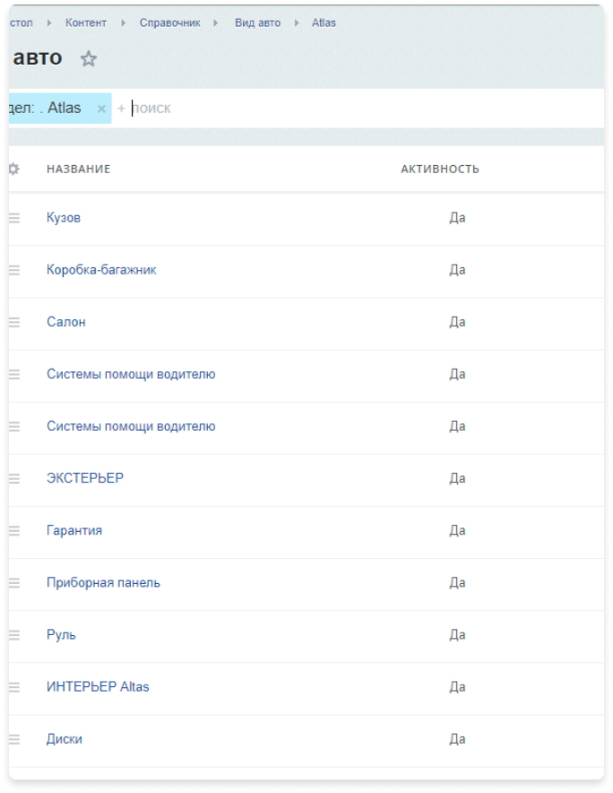
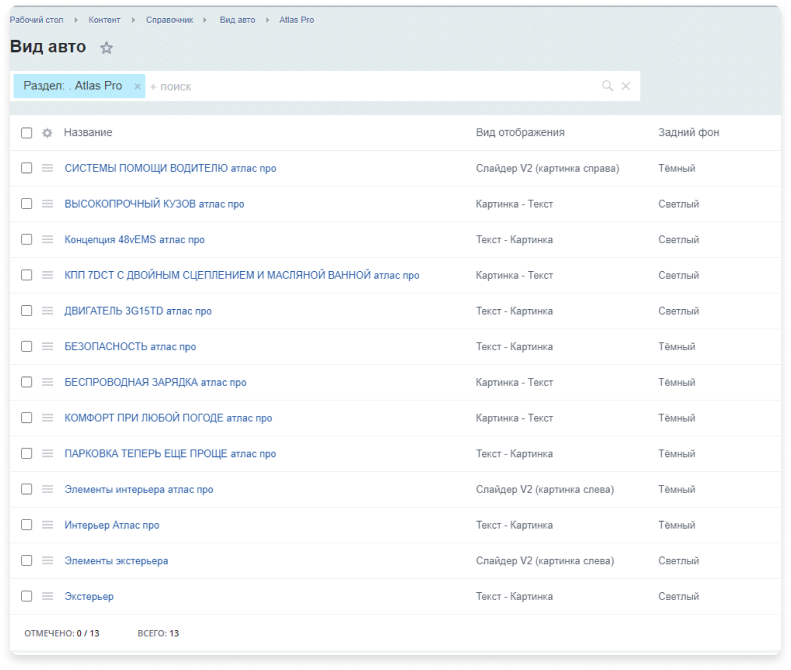

Разработка cайта для
Джили Атлант-М Боровая
Планируем дорожную карту
Работа велась по водопадной модели. Первичный план, без этапов согласования и правок, содержал 7 этапов. Примерная разбивка этапов была такой:
Подготовка и согласование структуры сайта
При разработке структуры были учтены все требования заказчика и seo специалистов, а также внесены некоторые корректировки для более удобной программной реализации
Проектирование
На основании структуры сайта заказчиком был подготовлен контент для ключевых страниц сайта и, в соответствии с контентом, были разработаны прототипы ключевых страниц. Это в перспективе помогло избежать серьезных корректировок на этапе дизайна.
На этапе подготовки технического задания модель хранения данных была разработана для максимально удобного наполнения и поддержки сайта в перспективе. Структура инфоблоков Битрикс была описана в полном объеме со всеми необходимыми свойствами, в перспективе она немного изменится на основании правок по дизайну.
Подготовка дизайна страниц сайта
В качестве дизайн-концепта был подготовлен дизайн главной страницы сайта. Далее были отрисованы ключевые шаблоны страниц (на структуре выше они обозначены зеленой галочкой). Для адаптивной версии готовился гайдлайн для верстальщика, на котором дизайнер показал элементы, поведение которых может быть непонятно при реализации адаптивной верстки, к слову, это обычная практика в Nineseven. Такая реализация позволяет нам и заказчику сэкономить дополнительное время и деньги на этапе дизайна
Внесение корректировок в техническое задание на основании изменения в рамках работ по дизайну
Кто говорил про водопадную модель? После подготовки дизайна техническое задание было несколько доработано, так как появились новые элементы (вложенность в разделе с отзывами, возможность скрыть одинаковые параметры при просмотре технических характеристик моделей, возможность настройки таблицы под просмотр конкретной модификации авто, дополнительные элементы call to action и другое).
Хранение моделей

Больная тема для автодилеров. Интеграция с 1С, SAP, Excel (csv, если быть более точным, но для заказчика все же excel), ручное наполнение и многое другое, вот с чем сталкиваются дилеры при наполнении сайта контентом. Нужно также помнить, что информацию следует поддерживать в актуальном состоянии, добавлять новые модели, комплектации и прочее. В первую очередь для упрощения задач контент-менеджера нами была реализована и обкатана на нескольких проектах механика хранения моделей и комплектаций. Она отличается для каждого проекта из-за специфики, но основное это:
-
Все таблицы заполняются через свойства элементов инфоблоков, никаких больше бесконечных
<tr><td>...</td></tr> для контент менеджера - Модели, комплектации и модификации хранятся в разных инфоблоках, реализована удобная механика привязки, нет путаницы при наполнении, возможность использовать в нескольких местах на сайте.
Посадочные страницы для моделей

Интеграция с Атлант-М API

После того как мы определились какие формы будут на сайте мы спроектировали и разработали порядок интеграции в соответствии с описанием методов API, предоставленной заказчиком. Вот основные вопросы, которые были продуманы на этом этапе:
- Какие поля будут в форме
- Какой формат у каждого поля (строка, множественная строка, список, чекбокс и т.д.)
- Откуда поля типа список подгружают контент
- Какие поля обязательные к заполнению
- Какие поля требуют маску валидации по каким правилам
- Нужна ли проверка капчей
- Куда данные с формы отправляются и в каком виде
- Что делаем после успешной отправки формы
- Что делаем при неуспешной отправке
- На какой странице располагается форма